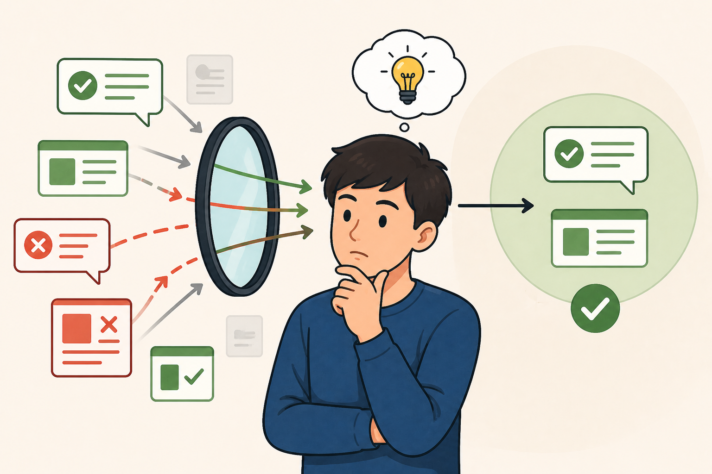

Thiên kiến xác nhận

Trong tâm lý học, thiên kiến xác nhận (confirmation bias) là xu hướng con người tìm kiếm, ghi nhớ và tin tưởng những thông tin phù hợp với niềm tin sẵn có, đồng thời bỏ qua hoặc xem nhẹ những thông tin trái ngược.
Đây là một trong những thiên kiến nhận thức phổ biến nhất, ảnh hưởng mạnh đến cách chúng ta suy nghĩ và ra quyết định.
Trong đời sống hằng ngày, thiên kiến xác nhận xuất hiện rất tự nhiên. Ví dụ, nếu bạn tin rằng một phương pháp học nào đó là hiệu quả, bạn sẽ dễ chú ý đến những trường hợp thành công và bỏ qua những người không đạt kết quả. Trên mạng xã hội, chúng ta thường theo dõi những nội dung cùng quan điểm với mình, từ đó tạo ra “vùng an toàn thông tin” và càng củng cố niềm tin ban đầu.
Nguyên nhân của thiên kiến này nằm ở cách bộ não tiết kiệm năng lượng. Việc tiếp nhận thông tin phù hợp với suy nghĩ có sẵn dễ dàng và thoải mái hơn so với việc đối mặt với những điều mâu thuẫn. Ngoài ra, con người cũng có xu hướng bảo vệ cái tôi và tránh cảm giác sai lầm, nên thường vô thức chọn lọc thông tin theo hướng có lợi cho mình.
Tuy nhiên, thiên kiến xác nhận có thể dẫn đến nhiều hệ quả tiêu cực. Nó làm giảm khả năng tư duy phản biện, khiến ta dễ đưa ra quyết định sai lầm hoặc đánh giá sai tình huống. Trong các lĩnh vực như đầu tư, khoa học hay chính trị, việc chỉ nhìn nhận thông tin một chiều có thể gây ra hậu quả nghiêm trọng.
Để hạn chế thiên kiến xác nhận, trước hết cần nhận thức rằng ai cũng có thể mắc phải nó. Một số cách hữu ích là chủ động tìm kiếm quan điểm trái chiều, đặt câu hỏi “nếu mình sai thì sao?”, và đánh giá thông tin dựa trên bằng chứng thay vì cảm xúc. Việc trao đổi với những người có góc nhìn khác cũng giúp mở rộng hiểu biết và giảm sự thiên lệch.
Tóm lại, thiên kiến xác nhận là “lăng kính vô hình” khiến chúng ta nhìn thế giới theo cách có lợi cho niềm tin của mình. Nhận ra và kiểm soát nó không chỉ giúp cải thiện tư duy mà còn giúp chúng ta đưa ra quyết định sáng suốt hơn trong cuộc sống.